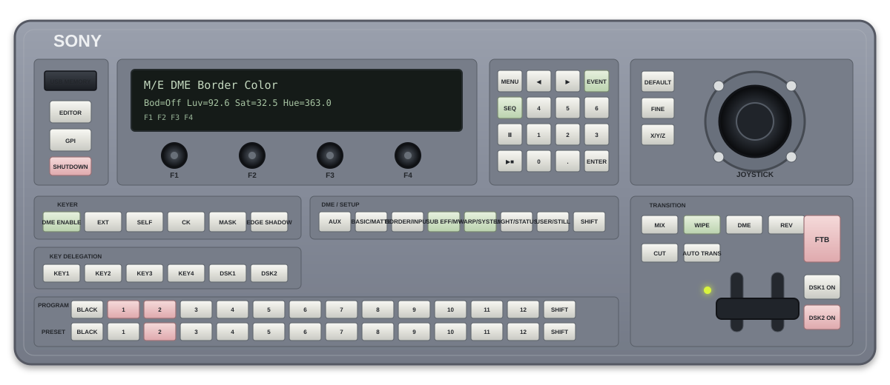

DTV — Sony DFS-900M
Painel de operação BKDF-901 1M/E. A geometria segue os desenhos técnicos do manual Sony; as cores e o acabamento reproduzem a aparência real do painel.

Painel de operação BKDF-901 1M/E. A geometria segue os desenhos técnicos do manual Sony; as cores e o acabamento reproduzem a aparência real do painel.
